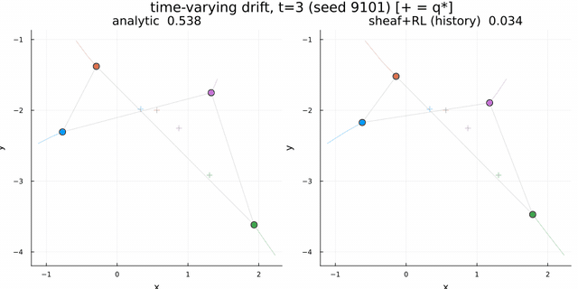
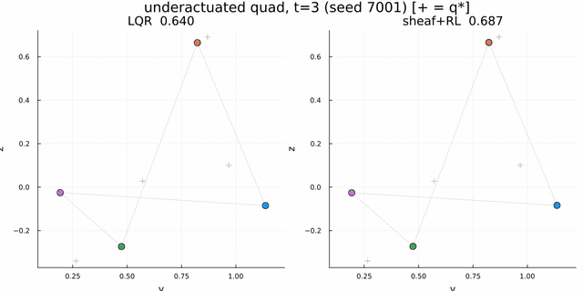
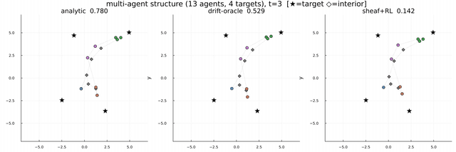
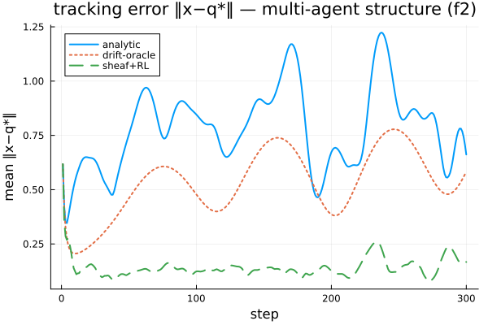
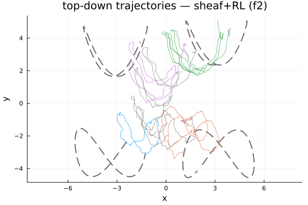
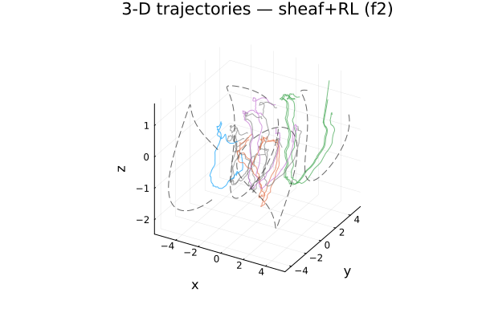

Where learning wins: drift, underactuation
The residual is exactly $\approx 0$ where the analytic base already suffices — so learning only adds where the base is genuinely wrong. These demonstrations are those cases: an unknown time-varying drift the analytic feedback can only reject reactively, an underactuated plant on which no analytic sheaf law even exists, and the two combined on the full multi-agent structure.
Demonstration 2: tracking under unknown, time-varying drift
Dynamics. The same agents with an unknown, time-varying drift, $\dot q_i = u_i + f(q_i,t)$. Concretely $f(q,t) = a\,\bigl[-\sin(q_y + \omega t),\ \sin(q_x + \omega t),\ 0\bigr]$ — a swirl / eddy velocity field: it depends nonlinearly on position (the $\sin$ of the coordinates forms a grid of rotating cells), and its entire pattern drifts in time through the $\omega t$ phase, so at any fixed location the disturbance direction and magnitude oscillate with period $2\pi/\omega$. It is bounded ($\lVert f\rVert \le a\sqrt2$) and acts in the horizontal plane. This is the control-affine form $\dot q = f(q,t) + g\,u$ with $g=I$; the drift is unknown to the controller. The decisive property is that it is non-autonomous: at the same position the drift differs at different times, so it cannot be read off a single instantaneous observation. (The field itself is fixed across episodes — this is not yet a claim of robustness to a distribution of drifts — but the policy still has to infer the current phase online, since it never observes absolute time.)
Sheaf structure. Identical to Demonstration 1 — identity consensus maps and $\sqrt{w}\,I$ pinning. The coordination layer is unchanged; only the plant gains a disturbance.
Coordination vs. execution. The sheaf still decides where ($b^\star_i$); the difficulty is reaching it against a drift that differs at the same position at different times. Because $f$ is non-autonomous, the current state cannot reveal it, so the observation carries a history window $\text{mem}_i=\{(x,u)_{t-H:t-1}\}$: consecutive states and controls determine the recent drift, $f \approx (x_{t+1}-x_t)/\mathrm{d}t - u_t$, which the policy extrapolates and feeds forward.
Result. Mean tracking error $\lVert x - q^\star\rVert$ drops from 0.54 (analytic feedback, which rejects the drift only reactively) to 0.05 (sheaf + learned residual): the learned agents (right) sit on their references while the analytic agents (left) trail the drift.

Demonstration 3: the underactuated quadrotor
Dynamics. Each agent is a nonlinear planar quadrotor, $x_i=[\,y,z,\varphi,\dot y,\dot z,\dot\varphi\,]\in\mathbb R^{6}$, with two rotor thrusts $u_i\in\mathbb R^{2}$. It is underactuated: lateral motion requires rolling ($\ddot y = -(T/m)\sin\varphi$), so the control-effectiveness $g$ is not full row rank.
Sheaf structure. The sheaf coordinates positions: stalks $\mathbb R^{2}$ (the $(y,z)$ of each agent and target), identity consensus maps, and $\sqrt{w}\,I$ pinning. The harmonic extension gives each quadrotor its desired $(y,z)$ reference; its attitude and velocity are the inner controller's concern, not the sheaf's.
Why a learned inner controller is required. The analytic harmonic feedback $-k\,g^{+}\eta$ is inapplicable: $g$ is not full row rank, so $g^{+}$ does not right-invert it and the law cannot realize the commanded motion. There is no analytic sheaf controller. The base is instead an LQR about hover (a fixed stabilizing gain), and the learned residual performs the underactuated execution — rolling to translate while holding formation about the moving targets.

Demonstration 5: the multi-agent structure under unknown drift
Setup. The same 13-agent / 4-target structure, with the unknown time-varying drift of Demonstration 2 acting on every agent.
Result. Under the drift the analytic error grows further (oscillating $0.5$–$0.9$); the learned policy infers the drift from the history window and tracks below the drift-oracle — sheaf+RL 0.14 vs analytic 0.78 (drift-oracle 0.53), across the whole fleet including the unpinned interior agents.


Why the learned policy beats the drift-oracle. The drift-oracle is not an optimal controller — it is the analytic base law with the drift subtracted exactly, $u = u_{\text{base}} - f(q,t)$. It removes the disturbance but keeps the base law's own tracking lag: at this gain the analytic feedback trails the fast targets even with no drift, and that no-drift error ($\approx 0.53$) is exactly the drift-oracle's floor. The learned residual does both — it cancels the drift and supplies the extra tracking authority the low-gain base lacks. So $\text{sheaf+RL} < \text{drift-oracle}$ means the policy beats analytic-plus-perfect-drift-knowledge, which is only an upper bound on what knowing the drift buys — not the true optimum, which the policy cannot exceed.
The top-down ($x$–$y$) view of the full trajectories shows the targets' figure-eight paths (dashed) and the fleet tracking them (agents coloured by their target):

and the three-dimensional view shows the same motion carried through depth in $z$:

Data collection and training
Two regimes are used, matching the two kinds of demonstration.
Behaviour cloning (Demonstration 1). The analytic sheaf controller is rolled out over many randomized scenarios. At each step the coordination solve produces every $b^\star_i$ and the analytic law produces a control $u_i$; the pairs $(o_i, u_i)$ are recorded into a dataset, and the policy $\pi_\theta$ is fit to it by supervised regression (mean-squared error). There is no environment interaction during training — it is purely imitative — and it is used only to verify that the $(A,B)$-free policy form can represent the analytic law.
Residual reinforcement learning (Demonstrations 2–5). The policy is trained by interacting with the simulated plant, using TD3 (twin-critic, target-smoothed, delayed-actor DDPG):
- Rollout. Many environments run in parallel. Each step: one coordination solve gives every $b^\star_i$; the shared actor outputs a residual $\Delta_\theta(o_i)$ per agent (plus exploration noise); the control $u_i = \operatorname{clip}_{\bar u}(u_{\text{base}} + \alpha\,\Delta_\theta)$ is applied; the plant — including its unknown drift — advances one step; the reward $r_i = -\lVert x_i - q^\star_i\rVert$ and next observation are recorded.
- Replay. Transitions $(o,\Delta,r,o')$ from every agent in every environment are pooled into one replay buffer. Each agent is an independent sample of the same weight-shared policy — which is exactly what makes the learned controller decentralized and size-agnostic.
- Update. Minibatches train the twin critics toward the clipped-double-Q TD3 target; the actor is updated (on a delay) to maximize the critic under the residual anchor $\beta\,\lVert\Delta_\theta\rVert^2$, which holds it near the base controller unless departing clearly helps; target networks follow by Polyak averaging.
The observation $o_i$ carries the history window $\text{mem}_i$ whenever the drift is time-varying, so the policy can infer the disturbance online. Because $\Delta_\theta\approx 0$ at initialization, training begins at the analytic / LQR base controller and only moves away from it where the critic rewards doing so — which is why a poorly-trained policy degrades gracefully toward the baseline rather than failing outright.
Evaluation. A trained policy is rolled out on held-out random scenarios and compared against the analytic base law and the drift-oracle, reporting the mean tracking error quoted in each demonstration.
Hyperparameters
| Group | Parameter | Value |
|---|---|---|
| Actor / critic net | hidden layers | 2 × 256, ReLU |
| actor output | $\tanh$ (bounded residual) | |
| TD3 | discount $\gamma$ | 0.99 |
| target smoothing $\tau$ (Polyak) | 0.005 | |
| actor / critic learning rate | $3\times10^{-4}$ / $10^{-3}$ | |
| batch size | 256 | |
| replay capacity | $3\times10^{5}$ | |
| policy update delay | every 2 critic steps | |
| target-action noise (clip) | 0.2 ($\pm$ 0.5) | |
| exploration noise | 0.15 | |
| warmup steps | 2 000 | |
| Residual | scale $\alpha$ | 2–3 |
| anchor weight $\beta$ | 0.05 | |
| Environment | timestep $\mathrm{d}t$ | 0.05 s |
| episode horizon $K$ | 300 steps | |
| parallel environments | 32 | |
| training steps | $4\times10^{5}$ (no drift) – $1.5\times10^{6}$ (drift) | |
| History window | $H$ (time-varying drift) | 6 |
| Drift field | amplitude $a$, frequency $\omega$ | 2.0, 3.0 rad/s |
| Multi-agent (Demos 4–5) | agents / targets | 13 / 4 |
| consensus gain $k$ | 2.0 |